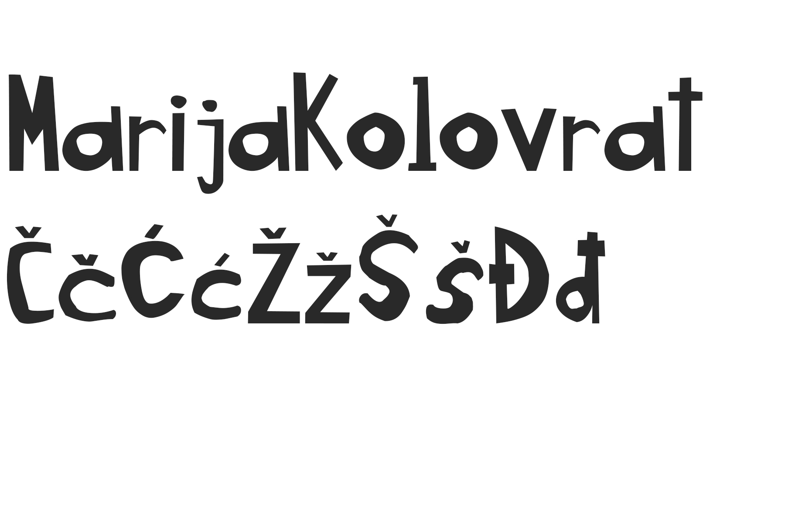
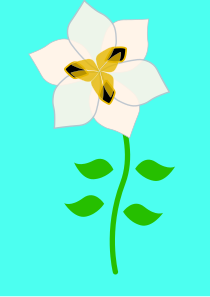
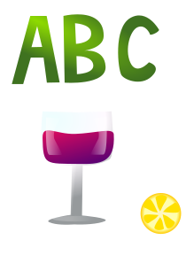
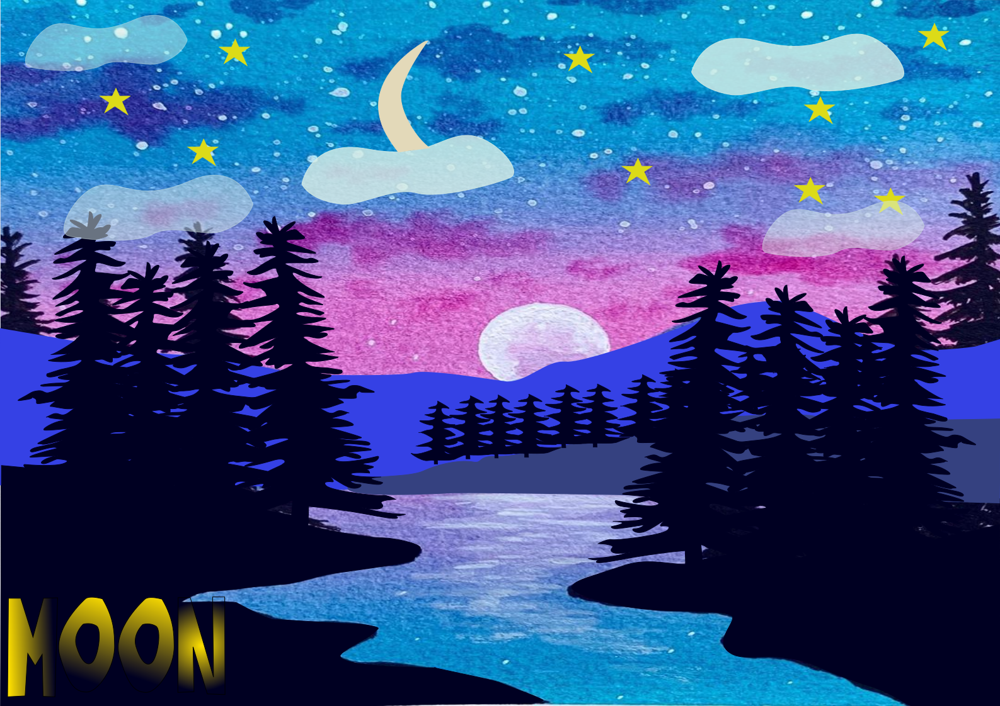
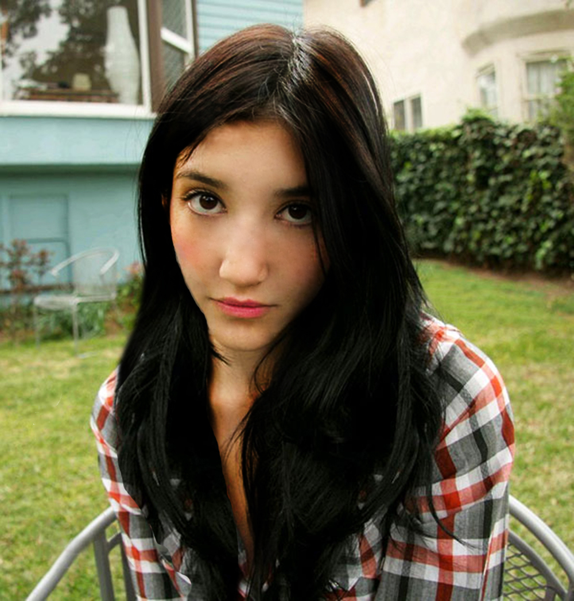
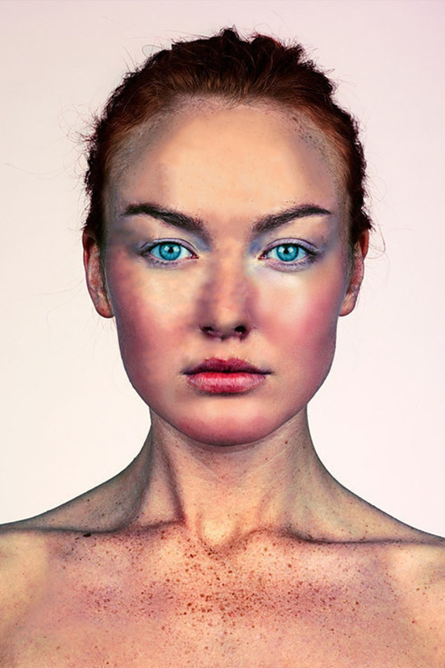
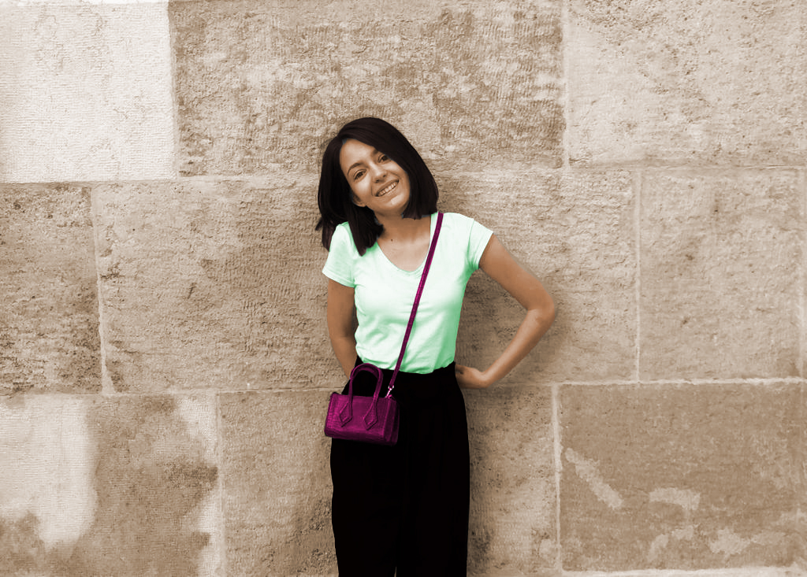
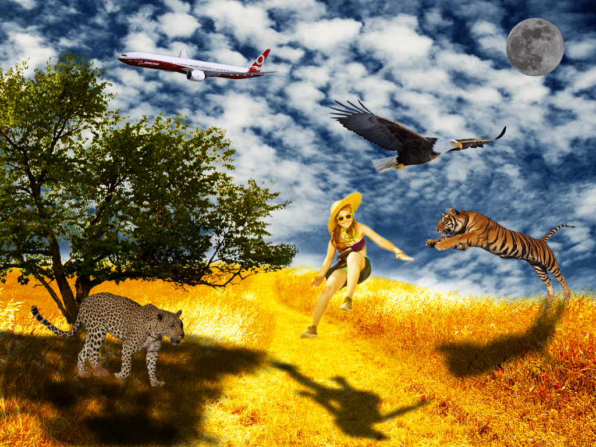
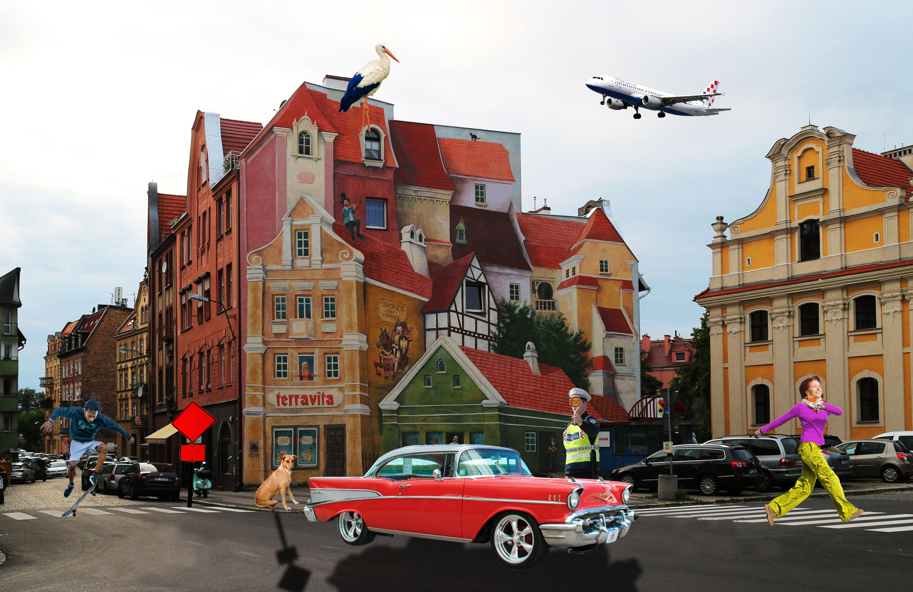

U vježbi 1 sami smo dizajnirali svoj font koristeći programe Fontographer ili FontForge.
U vježbi 2 koristili smo font iz vježbe 1 te u programima Illustrator ili Inkscape napravili masku koristeći Bezierove krivulje.
U vježbi 3 u programima Illustrator ili Inkscape crtali smo oblike prema predlošku (tracing), transformirali oblike i definirali SWATCH boja.
U vježbi 4 u programima Illustrator ili Inkscape izrađivali smo složene objekte metodama spajanja, aplicirali različite vrste gradijenata i koristili transparenciju.
U zadatku kolokvija spajali smo prethodno naučene alate i tehnike.
U vježbi 5 u programima Photoshop i GIMP bavili smo se tehnikom retuširanja fotografija.
 U vježbi 6 u programima Photoshop i GIMP koristili smo tehnike koloriranja.
U vježbi 7 u programima Photoshop ili GIMP bavili smo se fotomontažom.
U zadatku kolokvija spajali smo prethodno naučene alate i tehnike.
U vježbi 8 u programima Photoshop i Premiere ili Olive i GIMP izradili smo kinemagraf.

U vježbi 9 u programima Premiere ili Olive bavili smo se rezanjem i spajanjem video isječaka, video efektima, uređivanjem zvuka i dodavanjem teksta.